|
Huan Wang
Welcome to my homepage!👋🏻 My name is Huan Wang (Chinese: 王欢. My first name means "happiness or
joy" in Chinese). I work for (myself at) Westlake University(map-in-Chinese) (School of
Engineering, Department of Artificial Intelligence) as a Tenure-Track Assistant Professor (特聘研究员). I
did
my
Ph.D.
(2024) at Northeastern University (Boston, USA), advised by Prof. Yun
(Raymond) Fu at SMILE Lab. Before that,
I did my M.S. and B.E. at Zhejiang University (Hangzhou, China), advised
by Prof. Haoji Hu. I also visited VLLab at University of
California, Merced, luckily working with Prof. Ming-Hsuan Yang. I was fortunate to
intern at Google / Snap / MERL / Alibaba, working with many fantastic industrial researchers. I am
an AC for AAAI/ICLR/CVPR 2026.
I am interested in a variety of problems in AI.
Our group, ENCODE Lab,
is committed to building efficient and reliable AI systems
that are scalable and self-improving,
mainly focusing on three areas: efficient AI, multimodal learning, and
generative AI, with interdisciplinary research on AI for Environment, which aims to use AI to
solve environmental and sustainability problems for our planet.
My past research spans many tasks in vision and language modeling:
- high-level vision: image classification, detection, etc. [GReg, PaI, TPP];
- low-level vision: image restoration [ASSL,
SRP, ISS-P], stylization [NST],
snapshot compressive imaging [QuantizedSCI, MobileSCI];
- 3D reconstruction and rendering, NeRF: [R2L,
MobileR2L,LightAvatar];
- image generation with diffusion models or AR models: [SnapFusion, ARPG];
- LLMs / MLLMs: [DyCoke, HoliTom,
Survey].
I also spent some time on some philosophical problems about AI (or not), where I have been
inspired by Kant, Duchamp.
My email for work: wanghuan [at] westlake [dot] edu [dot] cn. (But
for reviewing, I use this email: huan
[dot] wang [dot] cool [at] gmail [dot] com, so please send me the
paper review invitation via this email. Thanks!)
Google Scholar /
GitHub /
LinkedIn /
X (Twitter) /
Rednote (小红书)
|
|
Openings / Collaborations
-
Hiring Ph.D. Students / Research Assistants / Visiting Students:
I am actively looking for Ph.D. students (2026 Fall), research assistants, and
visiting students for research-oriented projects on efficient deep learning (e.g., network
pruning, distillation, quantization), GenAI (e.g., T2I generation, diffusion models, LLM/MLLM),
etc.
Welcome to check here (and 知乎) for more information if you are
interested! Please fill in this form when
you
send me an email. Thanks! 【🔥 2025/12/5: Fall26还有1-2个PhD名额，欢迎申请！】
|
Recent News
-
2026/01 [CVPR'26] 6 papers accepted by CVPR 2026!
Congrats to my students and collaborators! 🎉
-
2026/01 [ICLR'26] 4 papers accepted by ICLR 2026!
Congrats to my students and collaborators! 🎉 - LinkedIn
post
-
2026/01 [TMLR'26, Survey] Our systematic
review of the long-context MLLM token compression methods is accepted by TMLR! [arxiv] [paper-repo]
-
2026/01 [CPAL'26] Two papers on efficient LLMs/MLLMs via
sparsity and low-rank decomposition are accepted by CPAL'26.
Congrats to Mingluo (Fall'26 incoming PhD
student) and
Haolei (visiting student)! Codes will be released
soon.
-
2025/11 [Funds] Received a research fund from CAAI-Ant
Group (CAAI-蚂蚁科研基金).
Thank you CAAI and Ant Group!
-
2025/09 [NeurIPS'25] 4 papers accepted by NeurIPS 2025
in the field of efficient and reliable AI.
Congrats to my students and collaborators from CWRU! 🎉 The three papers from our
group:
-
HoliTom: As a top-performing video LLM
token compression method, HoliTom can maintain 99.1% performance while reducing the FLOPs to
only 6.9%. And, it's training-free! [arxiv]
[code] [webpage]
-
Poison as Cure:
Adversarial visual noise is always malicious to our models like "poison"? No, we find it can
also be a cure to mitigate the
hallucination problem of VLMs. [arxiv] [code] [webpage]
- FreqExit: FreqExit is a dynamic inference framework for visual autoregressive (VAR)
models via early exit equiped with a novel proposed frequency-aware guidance. [openreview] [code] [webpage]
2025/09 [Services] I will serve as an Area Chair for ICLR
2026 and CVPR 2026.
2025/07 [Preprint] We are excited to present the first
systematic
review of multimodal long-context token compression methods. [arxiv] [code]
2025/07 [MM'25] A paper about
efficient video diffusion
model via network pruning is accepted by MM'25. Congrats again to Yiming! Code will be released soon.
2025/06 [ICCV'25] A paper about efficient robot
manipulation is accepted by ICCV'25. Congrats to Yiming! Code will be released soon.
2025/06 [Award-to-Students] 🎉Congrats to my PhD
student Keda Tao on receiving the "2025 Westlake
University
Xinrui Award (西湖大学博士研究生新锐奖)" (only 2 recipients in AI among all the 2025 Fall PhD students
in School of Engineering).
2025/06 [Services] I will serve as an Area Chair for AAAI
2026.
2025/02 [CVPR'25] DyCoke is accepted by CVPR'25!
Congrats to my PhD student Keda!
DyCoke is a training-free, plug-and-play token compression method for fast video LLMs: 1.5x
wall-clock inference speedup and 1.4x memory reduction with no performance drop. [arxiv][code]
2025/02 [Preprint] Can diffusion models blend visual
concepts that are semantically very unsimilar (e.g., an orange and a
teddy bear)? Yes, we introduce FreeBlend, a new method to blend
arbitrary concepts. [arxiv] [code] [webpage]
2025/01 [ICLR'25] One paper about distilling large
foundation models with low cost "Compressing Vision Foundation Models at ImageNet-level
Costs" is accepted by ICLR'25.
Thanks to the lead author Yitian!
2024/12 [Preprint] We present empirical evidence
to show that oracle pruning, the "ground-truth" pruning paradigm that has been followed for
around 35 years in the pruning community, does not hold in practice.
[arxiv][webpage]
2024/09 [NeurIPS'24] We introduce a training framework
Scala to learn slimmable ViTs. Using Scala, a ViT model is trained once but can inference
at different widths, up to the need of devices with different resources. The project is led by
Yitian. Congrats!
2024/07 [MM'24] We present the first real-time
on-device video SCI (Snapshot Compressive Imaging) framework via dedicated network design
and a distillation-based training strategy. Congrats to Miao!
2024/07 [ECCV'24] One paper about efficient video SCI
(Snapshot Compressive Imaging) via network quantization is accepted by ECCV'24 as an
oral. Congrats to Miao! [code]
2024/06 [New Start] Join the beautiful Westlake
University as a tenure-track assistant professor (特聘研究员).
2024/04 [Graduation] 🎈PhD student→PhD. So many
thanks to my Ph.D. committee (Prof. Yun Raymond
Fu, Prof. Octavia
Camps, Prof.
Zhiqiang Tao) and co-authors!
2024/01 [ICLR'24] One paper proposing a simple and
effective data augmentation method for improved action recognition is accepted by ICLR'24.
Congrats to Yitian!
2023/11 [Award] Received Northeastern PhD Network
Travel Award. Thanks to Northeastern!
2023/10 [Award] Received NeurIPS'23 Scholar Award.
Thanks to NeurIPS!
2023/09 [NeurIPS'23] Two papers accepted by NeurIPS
2023: SnapFusion and a work about
weakly-supervised latent graph inference. 2024/02: Gave a talk at ASU about SnapFusion
[Slides]. Thanks for the warm invitation from Maitreya Jitendra Patel, Sheng Cheng, and Prof. Yezhou Yang!
2023/07 [ICCV'23] One paper about sparse network training for efficient
image super-resolution is accepted by ICCV'23. Congrats to Jiamian!
2023/06 [Internship'23] Start full-time summer
internship at Google AR.
2023/06 [Preprint] We are
excited to present SnapFusion,
a brand-new efficient Stable Diffusion model on mobile devices. SnapFusion can generate a
512x512 image from text in only 1.84s on iPhone 14 Pro, which is the
fastest🚀 on-device SD model as far as we know! Give a talk at JD Health about this
work [Slides].
2023/05 [Talk] Give a talk at ZJUI (ZJU-UIUC Institute) on the recent advances
in efficient neural light field (NeLF), featuring two of our recent NeLF papers (R2L and MobileR2L). [Slides]
2023/05 [Award] Recognized as CVPR'23 Outstanding
Reviewer (3.3%). Thanks to CVPR and the ACs!
2023/04 [TPAMI'23] Extension of our NeurIPS'21
spotlight paper
ASSL, "Global Aligned Structured Sparsity
Learning for Efficient Image Super-Resolution", is accepted by TPAMI (IF=24.31). Code
will be relased to the
same repo.
2023/03 [Award] Received ICLR'23 Travel Award. Thanks
to ICLR!
2023/02 [CVPR'23] 2 papers accepted by CVPR'23: (1) MobileR2L [Code]
, congrats to Junli! MobileR2L is a
blazing fast🚀 neural rendering model designed for mobile devices: It can render
1008x756 images at 56fps on iPhone13. (2) Frame Flexible
Network [Code], congrats to Yitian!
2023/01 [ICLR'23] 2 papers accpeted by ICLR'23: Trainabaility Preserveing Neural
Pruning (TPP) and Image as Set of
Points
(Oral, top-5%).
2023/01 [Internship'23] Start part-time internship at
Snap, luckily working with
the Creative Vision
team again. 2023/09 Update: The paper of this internship, SnapFusion, is accepted by NeurIPS
2023! Thanks to my coauthors!🎉
2023/01 [Preprint] Check out our preprint work that
deciphers the so confusing
benchmark
situation in neural network (filter) pruning: Why is
the State of Neural Network Pruning so Confusing? On the Fairness, Comparison Setup, and
Trainability in Network Pruning
[Code]. Also
give a talk @UT Austin about this work. Thanks for the warm invitation from Dr. Shiwei Liu and Prof. Atlas Wang!
2022/10 [Award] Received NeurIPS'22 Scholar Award.
Thanks to NeurIPS!
2022/09 [NeurIPS'22] 3 papers accepted by NeurIPS'22:
One under my lead (which was my 1st
internship work at MERL in 2020 summer. Rejected 4 times. Now finally I close the loop. Thanks
to
my co-authors and the reviewers!), two collaborations. Code: Good-DA-in-KD, PEMN, AFNet.
2022/09 [TIP'22] One journal paper "Semi-supervised Domain Adaptive
Structure Learning" accepted by TIP. Congtrats to Can!
2022/07 [ECCV'22] We present the first residual MLP
network to represent neural
light
field
(NeLF) for efficient novel view synthesis. Check our webpage and ArXiv!
2022/05 [Award] Received Northeastern PhD Network
Travel Award. Thanks to Northeastern!
2022/04 [IJCAI'22] We offer the very first survey paper
on Pruning at
Initialization,
accepted by IJCAI'22 [ArXiv] [Paper Collection]
[Slides].
2022/01 [ICLR'22] Two papers on neural network sparsity
accepted by ICLR'22. One is
about
efficient image super-resolution (SRP),
the other about lottery ticket hypothsis (DLTH).
2021/09 [NeurIPS'21] One paper on efficient image
super-resolution is accepted by
NeurIPS'21
as a Spotlight (<3 %) paper! [Code]
2021/06 [Internship'21] Start summer internship at Snap
Inc., working with the
fantastic Creative
Vision team.
2021/01 [ICLR'21] One paper about neural network
pruning accepted by ICLR'21 as
poster. [ArXiv] [Code]
2020/06 [Internship'20] Start summer internship at
MERL, working with Dr. Mike
Jones and
Dr.
Suhas Lohit. (2022/09 Update: Finally,
paper of this
project accpeted by NeurIPS'22 -- two good years have passed, thank God..!)
2020/02 [CVPR'20] One paper about model compression for
ultra-resolution neural
style
transfer "Collaborative
Distillation for Ultra-Resolution Universal Style Transfer" is accepted by CVPR'20 [Code].
2020/01 [MLSys'20] 2019 summer intern paper accepted by
MLSys
2020. (Project: MNN from Alibaba, one of
the
fastest mobile AI engines on this planet. Welcome trying!)
2019/12 [JSTSP'19] One journal paper "Structured Pruning for Efficient
Convolutional Neural Networks via Incremental Regularization" accepted by IEEE
JSTSP.
2019/09 Join SMILE Lab at Northeastern University
(Boston, USA) to pursue my Ph.D. degree.
2019/07 [Internship'19] Start summer internship at
Taobao of Alibaba Group (
Hangzhou,
China).
2019/06 Graduate with M.Sc. degree from Zhejiang University
(Hangzhou, China).
|
|
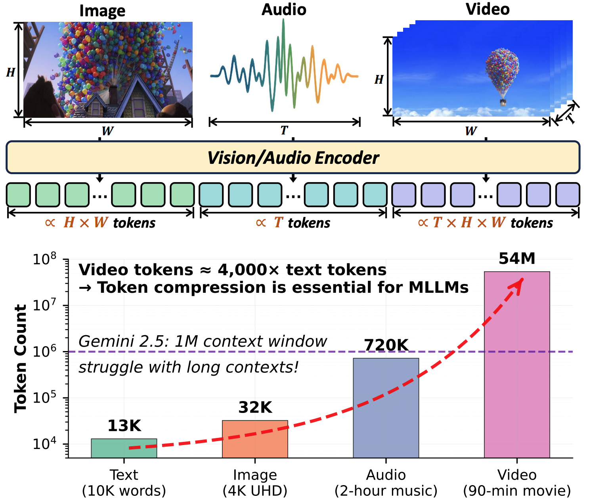
|
When Tokens Talk Too Much: A Survey of Multimodal
Long-Context Token Compression across Images, Videos, and Audios
Kele Shao*,
Keda Tao*,
Kejia Zhang,
Sicheng Feng,
Mu Cai,
Yuzhang Shang,
Haoxuan You,
Can Qin,
Yang Sui,
Huan Wang
(*: Equal Contribution)
TMLR, January 2026 |
ArXiv |
 Paper GitHub Repo
Paper GitHub Repo
|
|
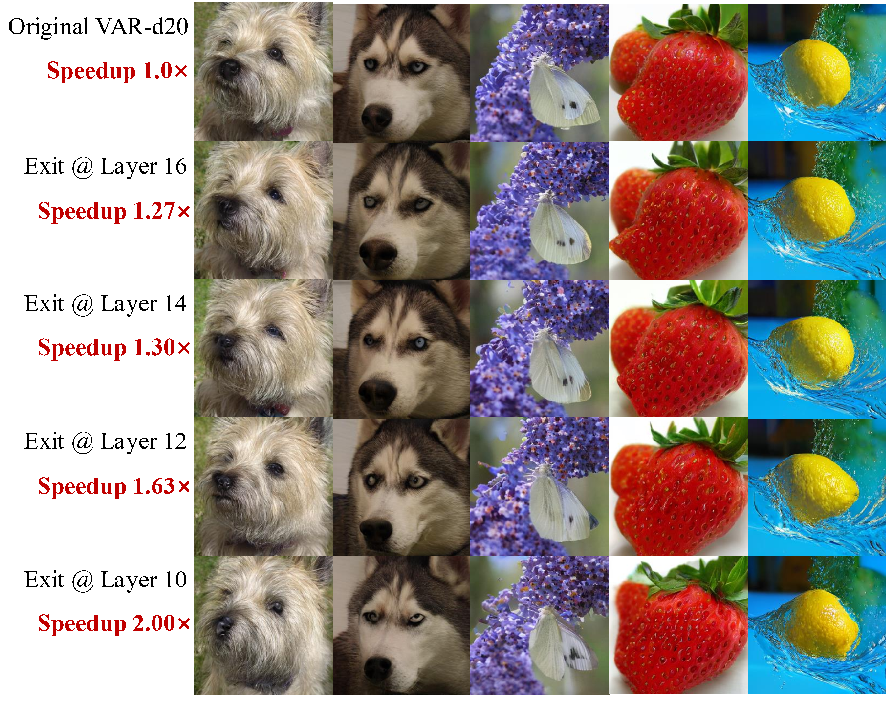
|
FreqExit: Frequency-Aware Early Exit for
Visual Autoregressive Models
Ying Li,
Chengfei Lv,
Huan Wang
In NeurIPS, 2025 |
OpenReview |
Code |
Webpage
|
|
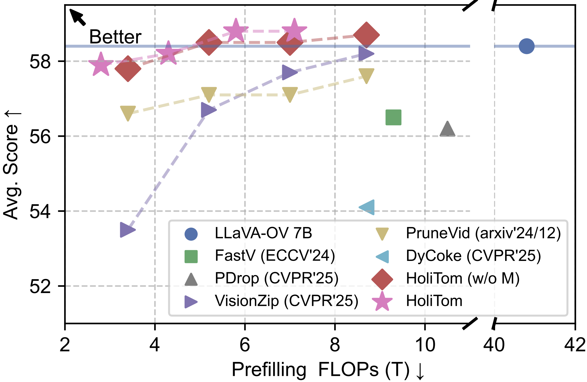
|
HoliTom: Holistic Token Merging for Fast Video
Large Language Models
Kele Shao,
Keda Tao,
Can Qin,
Haoxuan You,
Yang Sui,
Huan Wang
In NeurIPS, 2025 |
ArXiv |
Code
|
|
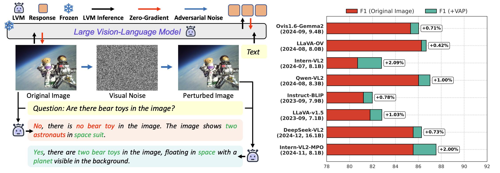
|
Poison as Cure: Visual Noise for
Mitigating Object Hallucinations in LVMs
Kejia Zhang,
Keda Tao,
Jiasheng Tang,
Huan Wang
In NeurIPS, 2025 |
ArXiv |
Code
|
|
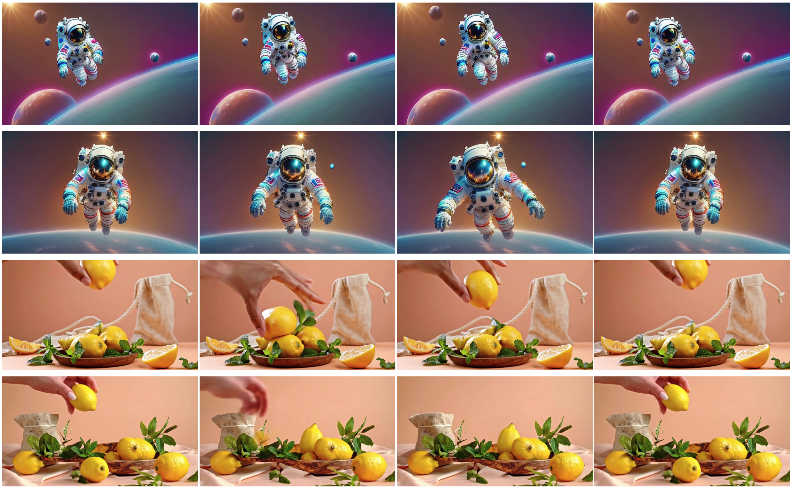
|
Individual Content and Motion Dynamics Preserved Pruning
for Video Diffusion Models
Yiming Wu,
Zhenghao Chen,
Huan Wang,
Dong Xu
In ACM MM, 2025 |
ArXiv
|
|
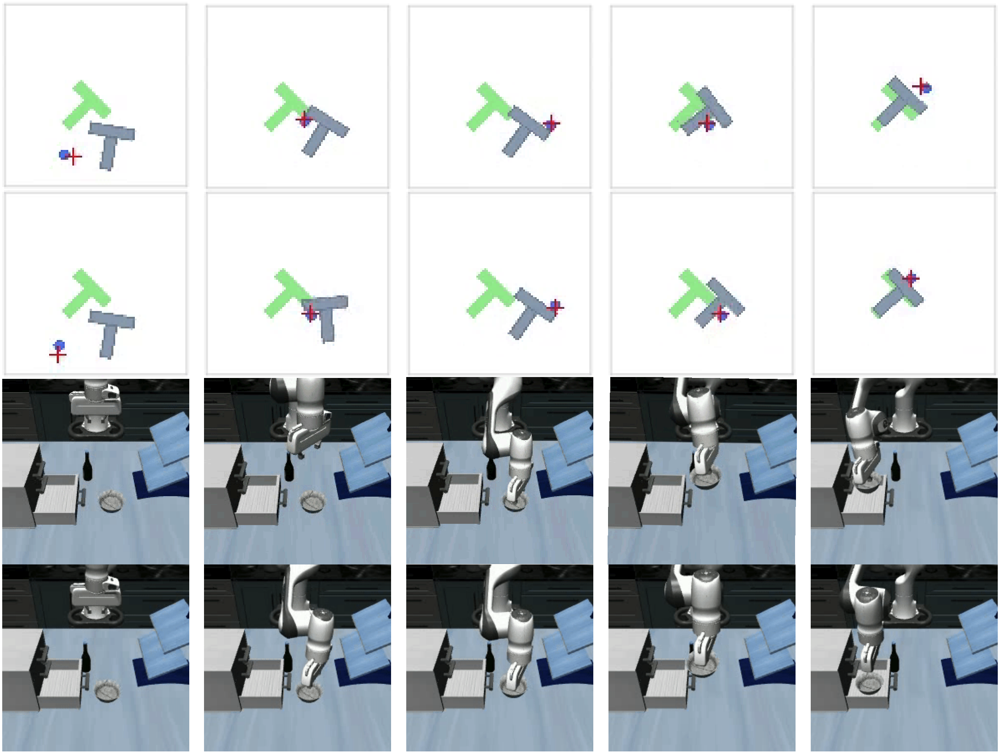
|
On-Device Diffusion Transformer Policy for Efficient
Robot Manipulation
Yiming Wu,
Huan Wang#,
Zhenghao Chen,
Jianxin Pan,
Dong Xu#
(#: Corresponding Author)
In ICCV, 2025 |
ArXiv
|

|
Can MLLMs Guide Me Home? A Benchmark Study on
Fine-Grained Visual Reasoning from Transit Maps
Sicheng Feng*,
Song Wang*,
Shuyi Ouyang,
Lingdong Kong,
Zikai Song,
Jianke Zhu,
Huan Wang#,
Xinchao Wang
(*: Equal Contribution, #: Corresponding Author)
In Preprint, May 2025 |
ArXiv |
Webpage
|
|
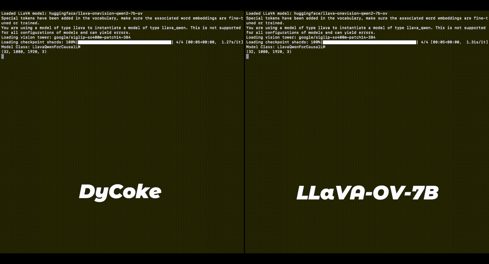
|
DyCoke: Dynamic Compression of Tokens for Fast Video
Large Language Models
Keda Tao,
Can Qin,
Haoxuan You,
Yang Sui,
Huan Wang#
(#: Corresponding Author)
In CVPR, 2025 |
ArXiv |
Code
|
|
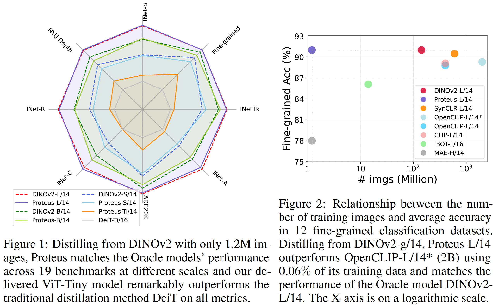
|
Accessing Vision Foundation Models via
ImageNet-1K
Yitian Zhang,
Xu Ma,
Yue Bai,
Huan Wang#,
Yun Fu
(#: Corresponding Author)
In ICLR, 2025 |
ArXiv |
Code
|
|
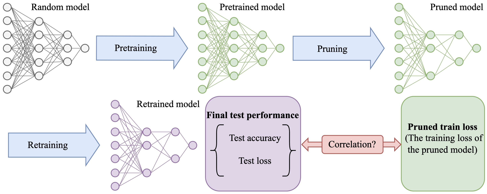
|
Is Oracle Pruning the True Oracle?
Sicheng Feng,
Keda Tao,
Huan Wang
Preprint, 2024 |
Webpage |
ArXiv |
Code
|
|
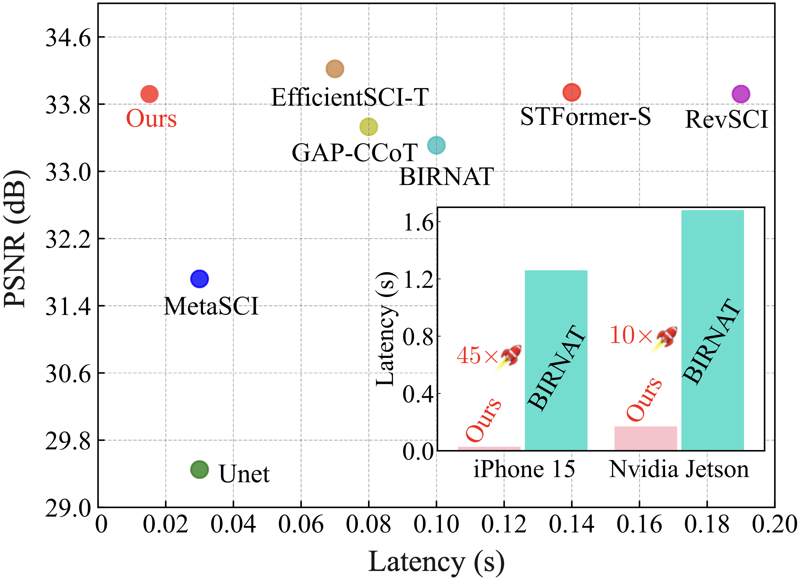
|
Towards Real-time Video Compressive Sensing on Mobile
Devices
Miao Cao, Lishun
Wang, Huan Wang#, Guoqing Wang, Xin
Yuan#
(#: Corresponding Author)
In ACM MM, 2024 |
ArXiv |
Code
|
|
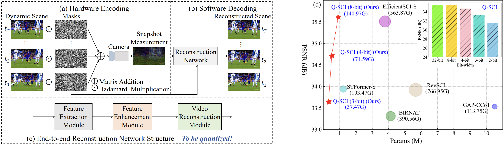
|
A Simple Low-bit Quantization Framework for Video Snapshot
Compressive Imaging
Miao Cao,
Lishun Wang, Huan Wang, Xin
Yuan
In ECCV (Oral, 200/8585=2.3%), 2024 |
Arxiv |
Code
|
|
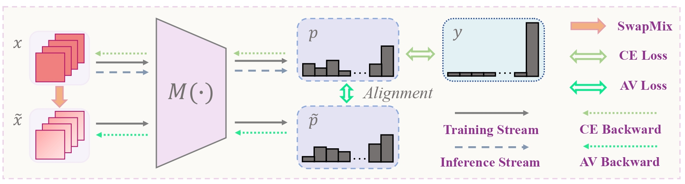
|
Don't Judge by the Look: A Motion Coherent Augmentation
for Video Recognition
Yitian Zhang, Yue Bai,
Huan Wang, Yizhou Wang, Yun Fu
In ICLR, 2024 |
ArXiv |
Code
|
|
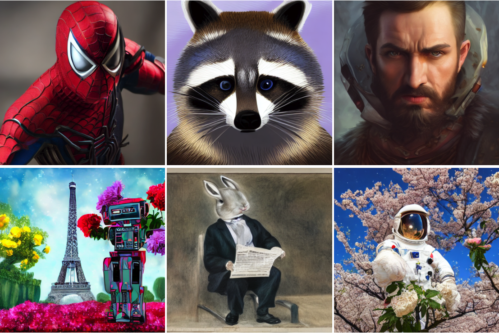
|
SnapFusion: Text-to-Image Diffusion Model on Mobile
Devices within Two Seconds
Yanyu Li*,
Huan Wang*,
Qing Jin*,
Ju Hu,
Pavlo Chemerys,
Yun Fu,
Yanzhi Wang,
Sergey Tulyakov,
Jian Ren*
(*: Equal Contribution)
In NeurIPS, 2023 |
ArXiv |
Webpage
|
|
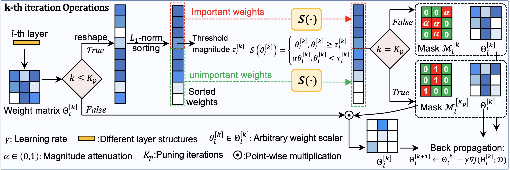
|
Iterative Soft Shrinkage Learning for Efficient Image
Super-Resolution
Jiamian
Wang, Huan Wang, Yulun
Zhang, Yun
Fu, Zhiqiang Tao
In ICCV, 2023 |
Arxiv |
Code
|
|
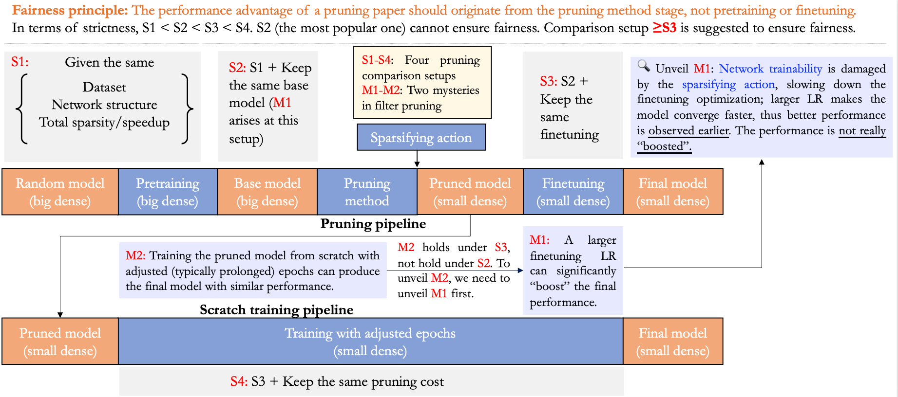
|
Why is the State of
Neural Network Pruning so Confusing? On the Fairness, Comparison Setup, and Trainability in
Network Pruning
Huan Wang, Can Qin, Yue Bai, Yun Fu
Preprint, 2023 |
ArXiv |
Code
|
|
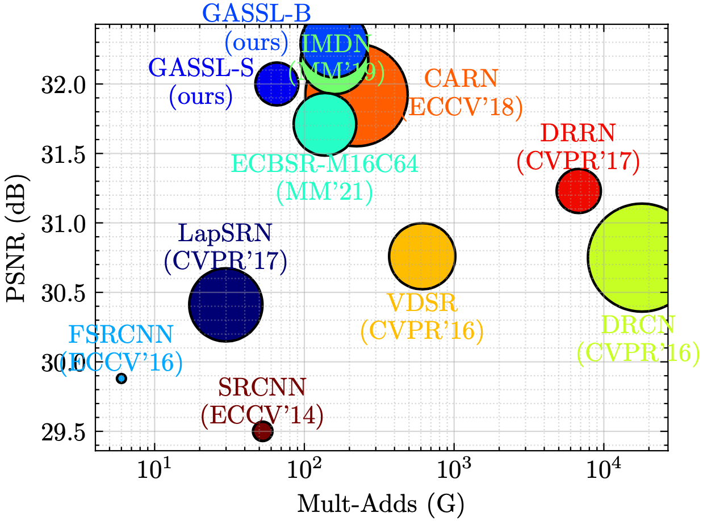
|
Global Aligned Structured Sparsity
Learning for Efficient Image Super-Resolution
Huan Wang*, Yulun
Zhang*, Can Qin, Luc Van Gool, Yun Fu
(*: Equal Contribution)
TPAMI, 2023 |
PDF |
Code
|
|
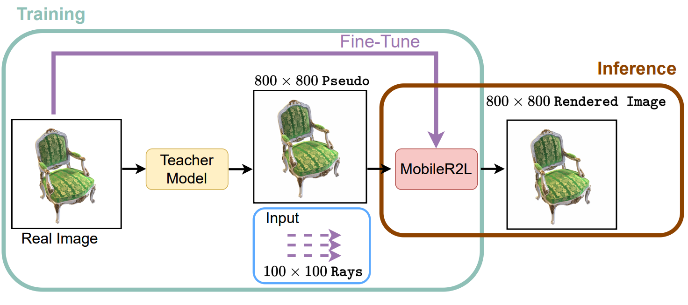
|
Real-Time Neural Light Field on Mobile
Devices
Junli Cao, Huan Wang, Pavlo
Chemerys, Vladislav Shakhray, Ju
Hu, Yun
Fu, Denys Makoviichuk,
Sergey Tulyakov, Jian Ren
In CVPR, 2023 |
Webpage |
ArXiv |
Code
|
|
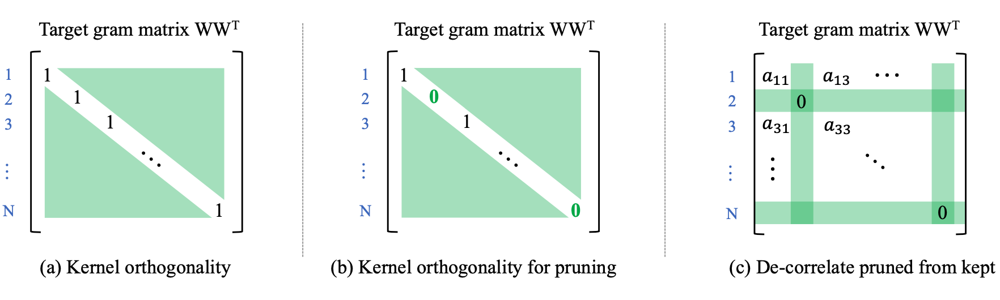
|
Trainability Preserving Neural Pruning
Huan Wang, Yun
Fu
In ICLR, 2023 |
OpenReview |
ArXiv |
Code
|
|
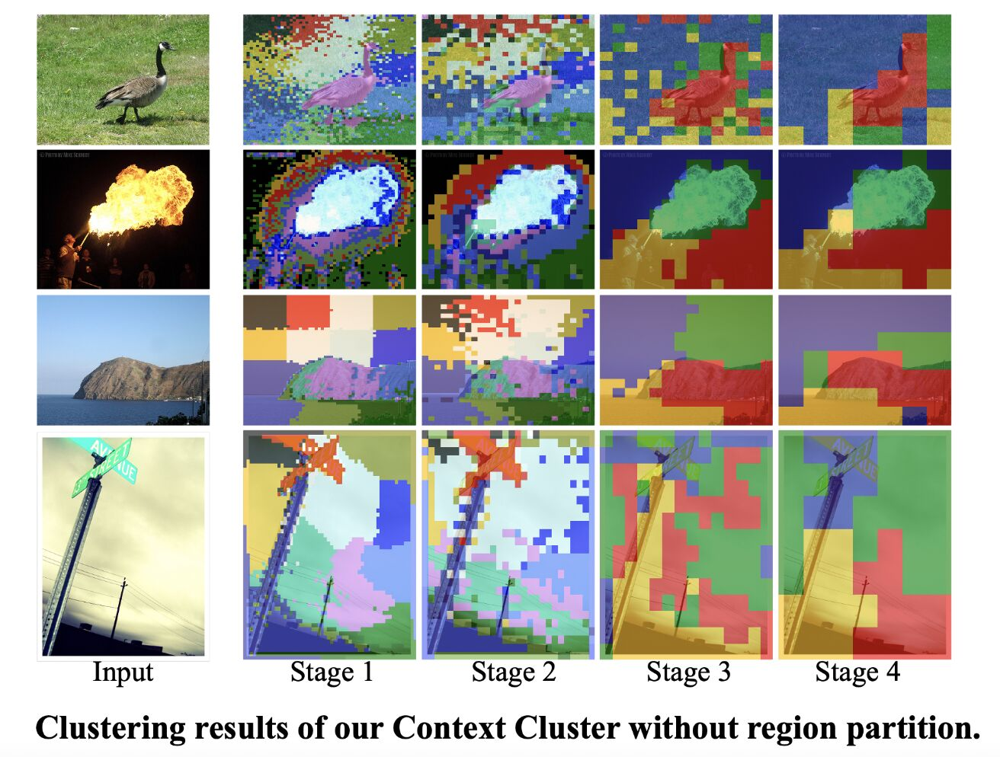
|
Image as Set of Points
Xu Ma,
Yuqian Zhou,
Huan Wang, Can Qin, Bin
Sun, Chang
Liu, Yun
Fu
In ICLR (Oral, 5%), 2023 |
Webpage |
OpenReview |
Code
|
|
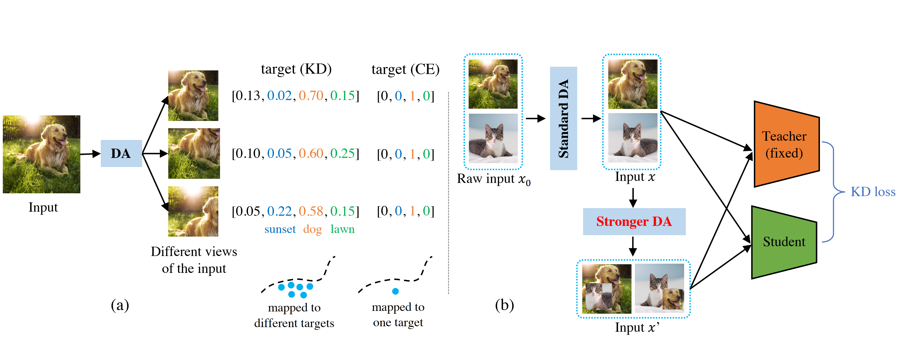
|
What Makes a "Good" Data Augmentation in
Knowledge Distillation -- A Statistical Perspective
Huan Wang, Suhas Lohit, Mike Jones, Yun
Fu
In NeurIPS, 2022 |
Webpage |
ArXiv |
Code
|
|
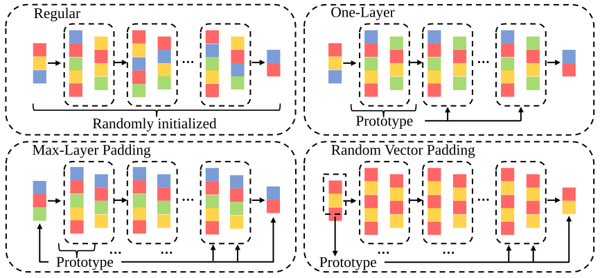
|
Parameter-Efficient Masking Networks
Yue Bai, Huan Wang, Xu
Ma, Yitian Zhang, Zhiqiang Tao, Yun
Fu
In NeurIPS, 2022 |
ArXiv |
Code
|
|
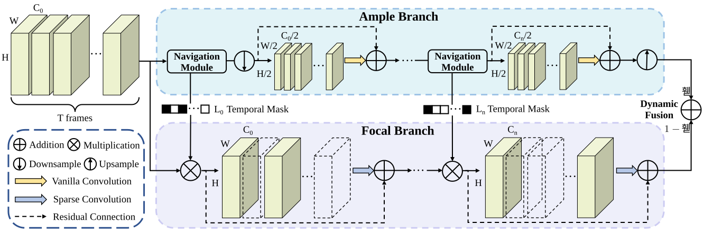
|
Look More but Care Less in Video Recognition
Yitian Zhang, Yue Bai, Huan
Wang, Yi Xu, Yun Fu
In NeurIPS, 2022 |
ArXiv |
Code
|
|
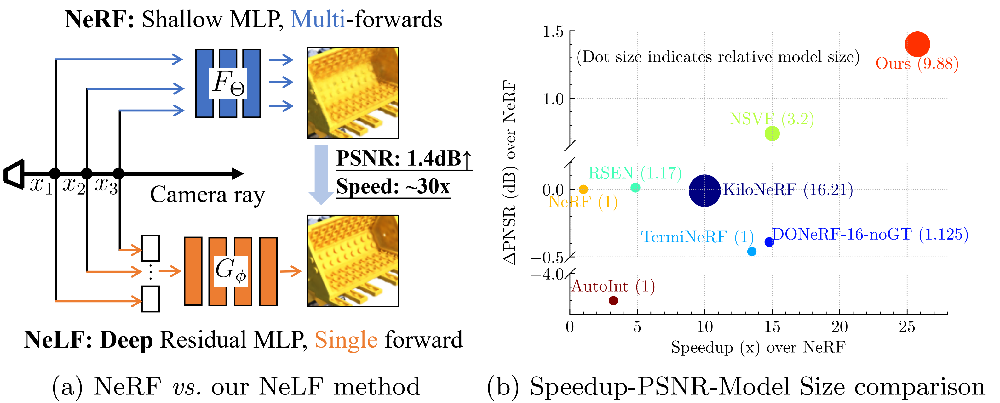
|
R2L: Distilling Neural Radiance Field to Neural Light
Field for Efficient Novel View
Synthesis
Huan Wang, Jian
Ren, Zeng Huang,
Kyle Olszewski, Menglei Chai, Yun Fu, Sergey Tulyakov
In ECCV, 2022 |
Webpage |
ArXiv |
Code
|
|
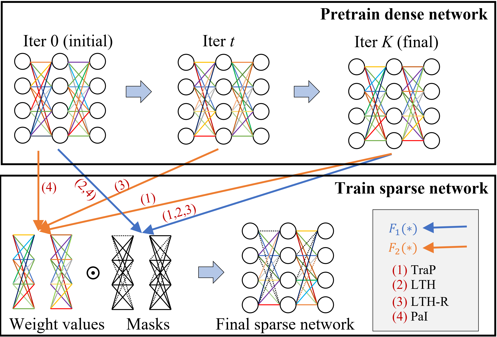
|
Recent Advances on Neural Network Pruning at
Initialization
Huan Wang, Can Qin, Yue Bai, Yulun Zhang, Yun Fu
In IJCAI, 2022 |
ArXiv | Slides
Paper
Collection
|
|
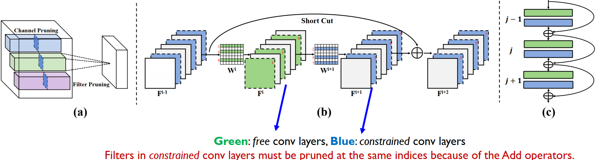
|
Learning Efficient Image Super-Resolution
Networks via Structure-Regularized Pruning
Huan Wang*, Yulun
Zhang*, Can Qin, Yun Fu
(*: Equal Contribution)
In ICLR, 2022 |
PDF |
Code
|
|
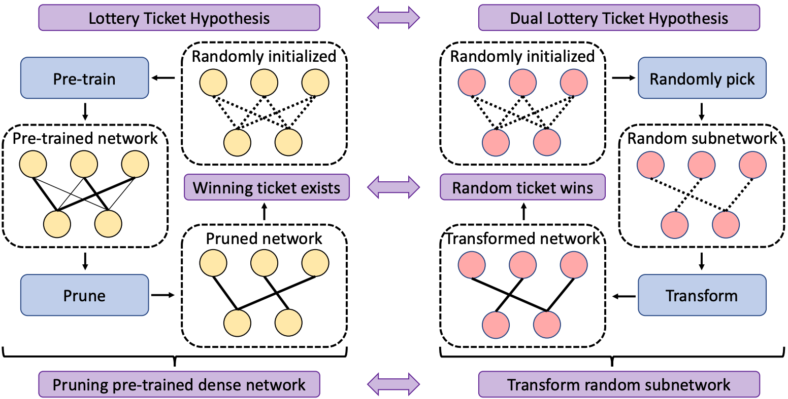
|
Dual Lottery Ticket Hypothesis
Yue Bai, Huan
Wang, Zhiqiang Tao, Kunpeng
Li, Yun
Fu
In ICLR, 2022 |
OpenReview |
ArXiv |
Code
|
|
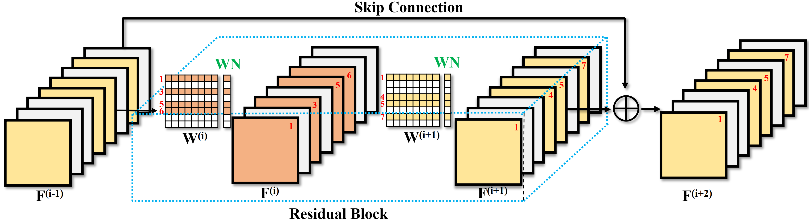
|
Aligned Structured Sparsity Learning for
Efficient Image Super-Resolution
Huan Wang*, Yulun
Zhang*, Can Qin, Yun Fu
(*: Equal Contribution)
In NeurIPS (Spotlight, <3 % ), 2021 |
PDF |
Code
|
|
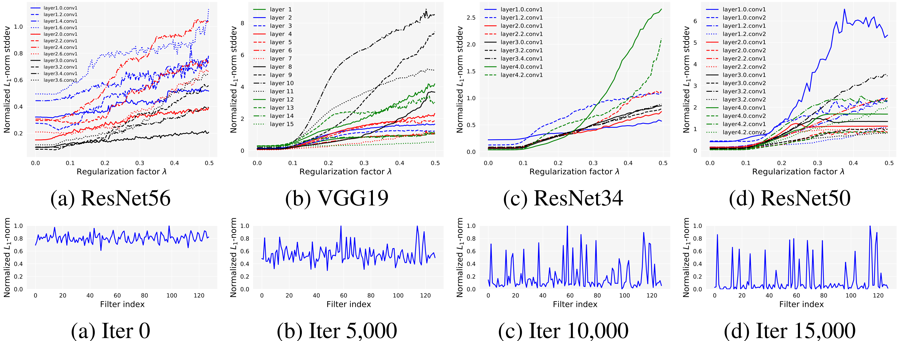
|
Neural Pruning via Growing Regularization
Huan Wang, Can Qin, Yulun Zhang, Yun Fu
In ICLR, 2021 |
ArXiv,
OpenReview |
Code
|
|
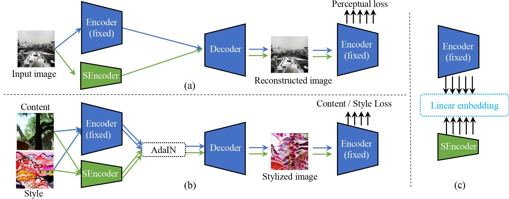
|
Collabrotive Distillation for Ultra-Resolution Universal
Style Transfer
Huan Wang, Yijun
Li, Yuehai Wang, Haoji
Hu, Ming-Hsuan Yang
In CVPR, 2020 |
ArXiv, Camera
Ready |
Code
|
|
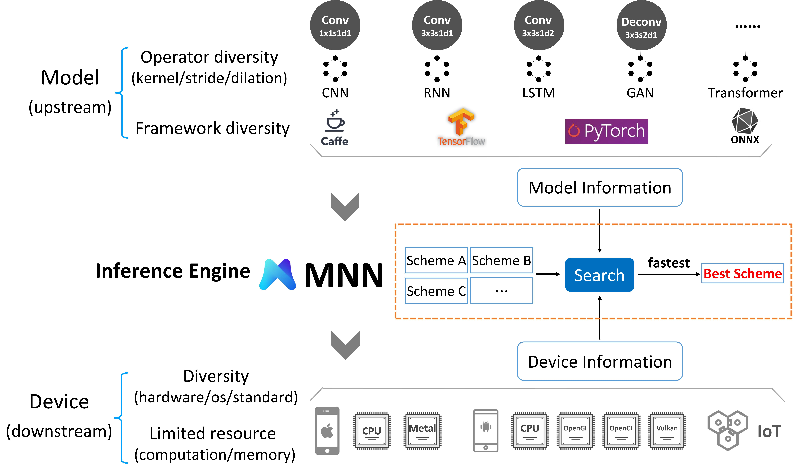
|
MNN: A Universal and Efficient Inference
Engine
Xiaotang Jiang, Huan Wang, Yiliu Chen, Ziqi Wu, et al.
In MLSys (Oral), 2020 |
ArXiv |
Code
|
|
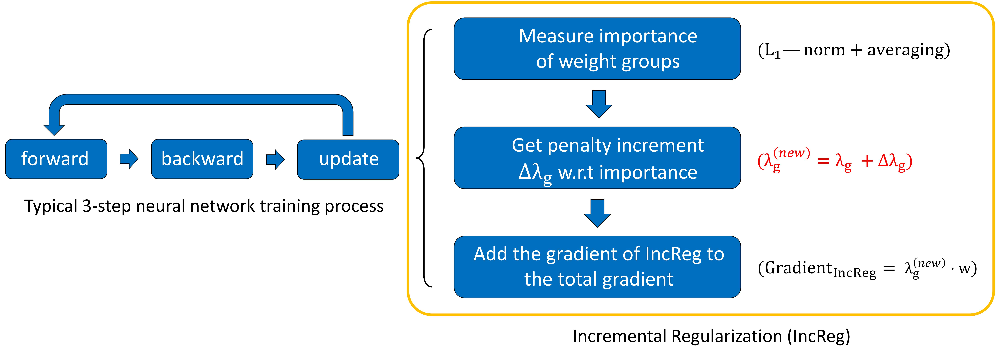
|
Structured Pruning for Efficient ConvNets via Incremental
Regularization
Huan Wang, Xinyi Hu, Qiming Zhang, Yuehai
Wang, Lu
Yu, Haoji
Hu
In NeurIPS Workshop, 2018; IJCNN, 2019 (Oral);
Journal
extension to JSTSP, 2019
NeurIPS
Workshop,
IJCNN,
JSTSP |
Code
|
|
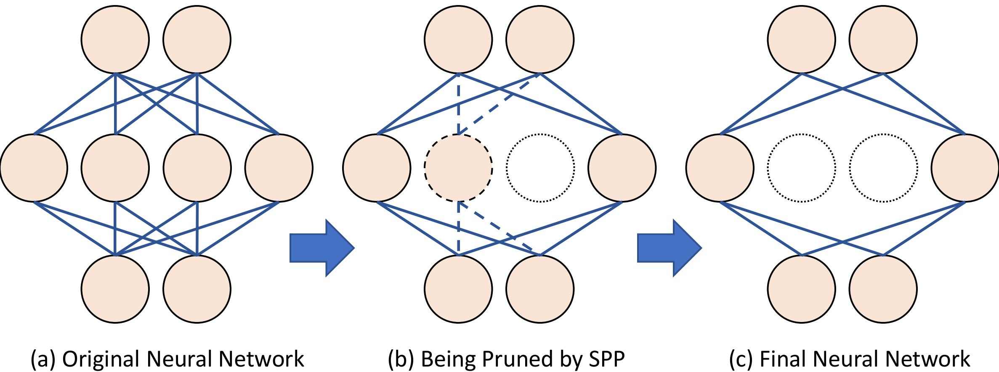
|
Structured Probabilistic Pruning for Convolutional Neural
Network Acceleration
Huan Wang*, Qiming Zhang*, Yuehai
Wang, Haoji
Hu
(*: Equal Contribution)
In BMVC (acceptance rate 29.5%), 2018 (Oral) |
ArXiv |
Camera Ready |
Code
|
Professional Services
-
Area Chair - AAAI 2026, ICLR 2026, CVPR 2026
-
Journal Reviewer - TPAMI, IJCV, TIP, TNNLS, TMM, PR, IoT, JSTSP, TCSVT, etc.
-
Conference Reviewer - CVPR/ECCV/ICCV/SIGGRAPH Asia, ICML/ICLR/NeurIPS, AAAI/IJCAI,
MLSys, COLM, etc.
|
|
{kind=link}
{kind=link}